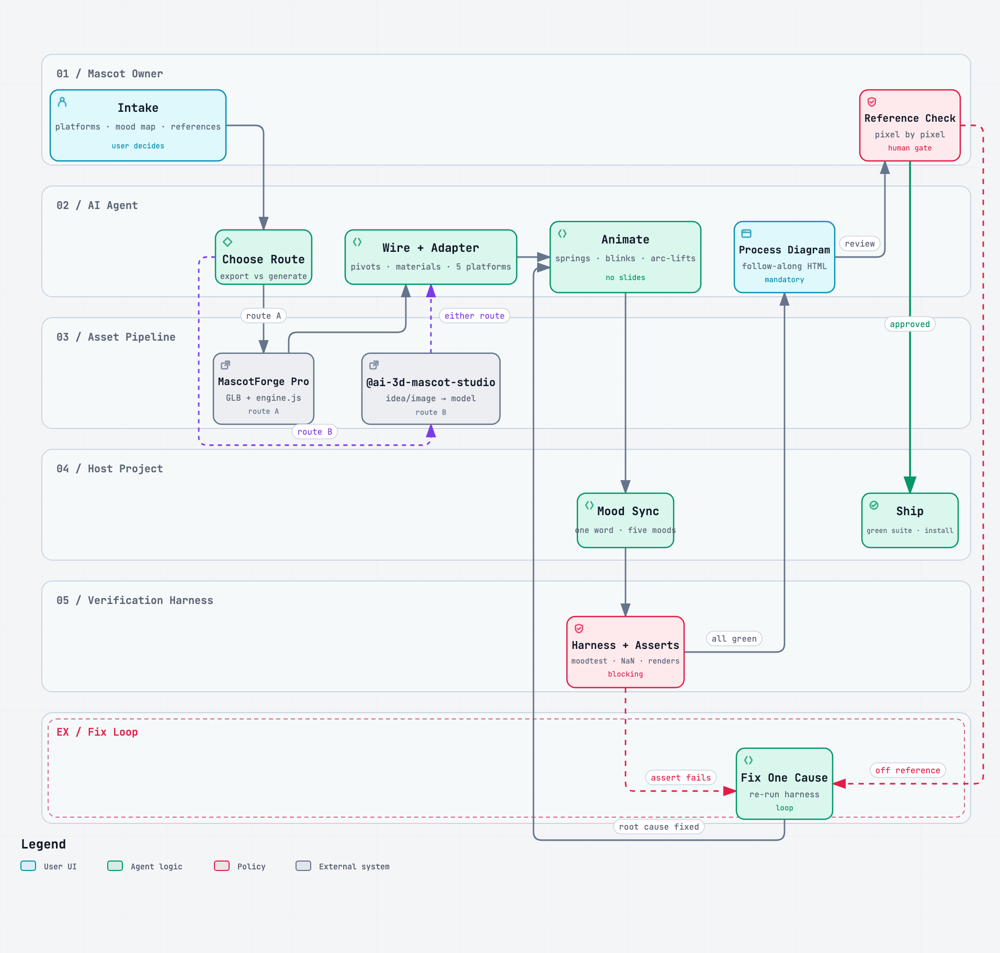

Give your project a mascot that feels alive.
It breathes, blinks and changes mood as your app changes state — five moods, one word each, checked before you ever see it.
The real viewer, live in 3D — pick a mood. Go on, boop him.
Three steps, and the third is a word.
-
1
Add the skill
It lives beside your coding agent, ready whenever you want a character in the product.
npx skills add Ravinder82/FlyMascots -
2
Bring a mascot
An idea in a sentence, an image you like, or a MascotForge export. The skill builds it into a real, jointed character.
idea · image · export -
3
Say the word
Your app sets one of five words — idle, working, think, celebrate, sleep — and the mascot does the rest, on any of five platforms.
setMood("working")
Five faces. One word each.
Real footage of the character, caught mid-mood — breathing, blinking, hopping, sleeping.
The whole thing, in twenty-four seconds.
It loops, and it is silent — nothing to turn down. The 34-second story cut and vertical versions live in the repo.
It ships where your app lives.
- WebsiteThree.js, in the page — the hero above
- macOS & iOSSceneKit
- React NativeExpo apps, same five words
- Static pagesblogs and docs, one file
- Electrondesktop apps, same engine
It checks itself before you see it.
Not “looks right to me.” Every run ends with the numbers below asserted, and all sixty mood changes checked for a body that holds together.
Read the numbers yourself:
skills/flymascots/references/verification.md
It leaves a diagram behind.
Open it in a browser and follow what the run did, step by step — the same kind of page you are on right now.

One command, then say hello.
npx skills add Ravinder82/FlyMascots
npm i flymascots
MIT · v1.0.1 · the package carries the skill, the pipeline diagram and the README
Fair questions, straight answers.
Is the mascot above a video?
No — it is the real viewer running in this page, in 3D, answering your clicks. The five faces below are real footage of that same viewer, and the only proper video is the twenty-four second film.
Do I have to draw anything?
No. Start from a sentence, an image you already have, or a MascotForge export. The skill builds the character, the poses and the motion.
What does it cost?
Nothing. MIT, both the skill and the package — read it, change it, ship it.
How do I know it actually works?
Every run asserts the pose numbers above, checks all sixty mood changes for a body that holds together, and leaves you a diagram of exactly what happened.
What is the mascot on this page?
Axo — a demo character built with the skill itself. Every loop, frame and number on this page comes from that build; your mascot will be yours.